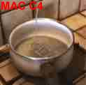
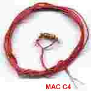
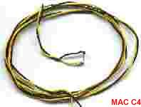

| EXPLOSIF | COUNTERSTRIKE - 1 |
Moi j'aime bien les détonateurs paske si y en avait po bein ça péterai po. Donc pour ce 1er N° de CounterStrike j'ai décidé, moi psycho, de vous faire un p'tit cours sur la fabrication des détonateurs pour faire péter vos zoli p'tite bombes de chlo+sucre (ou n'importe quel autres bombes), conseil : adaptez vos détonateurs selon la bombe utilisé ex : Chlo+Sucre moyenne = mèche longue.
1 - Les mèches :
Les mèches c bien, simple efficace mais seulement si c bien fait donc pour ne pas les ratés suivez mes sages conseils :
Les mèches a combustion rapide : Elles sont de moyenne qualités mais ont l'avantages de ne pas être compliquées a fabriquer. Le Matos : De la poudre noire (poudre de pétards), du fils de coton ou de la laine fine, un vaporisateur remplie d'eau propre.
Dans un bocal ou une casserole versez votre poudre noire(dosez selon vos besoin) et humidifier la a l'aide du vaporisateur jusqu'à obtenir de la pâte. Enroulez (tresser) trois ou quatre fils de cotons ou de laines ensembles et frottez les dans la pâte de poudre noire. Laisser sécher. C prêt !!! . J'ai compter environ une combustion d'1,2 M /s selon la qualité obtenue.
2 - La résistance qui ne résiste pas :
Houuu !! la vilaine résistance qui ne veut pas faire son boulot...remarqué avec ce qu'on va lui mettre dans le nez c compréhensible. Donc le but de ce détonateur c de faire chauffer la résistance pour quelle brûle tous ce qui la touche.
Le Matos : Bon autant vous prévenir il va falloir bcp de fils électriques (moi m'en fous mon daron boss chez EDF) de préférence un fils qui tient la route genre câblage d'électriciens, il faudra une pile de 4,5 V avec une résistance de 10 Ohms.
bon c simple enrouler solidement vos deux fils autour des pâtes de la résistance et a l'autre bout des fils vous attacher 1 fils autour d'une des bornes de la pile. La résistance doit toucher votre mélange évidement. Il suffira de faire toucher le deuxième fils sur la 2ème bornes de la pile pour tout faire sauter !!!. Je conseils d'utiliser ce genre de détonateur pour du Napalm ou encore du C4 ou aussi du plastique (voir Tipiak : ping-pong explosifs !!).

3 - Détonateurs chimiques :
Bon la c pas compliquer non plus mais moi je trouve ça hyper dangereux, pour l'instant je vais donner la recette brut mais je pense m'inventer un p'tit système plus sûr pour pouvoir utiliser sans risque ce détonateur...enfin pour ceux qui connaissent pas la peine de râler...c ce que je pense. Le but c de créer une réaction chimique qui ira s'enflammer quelques secondes après le contact entres les deux produits.
Le Matos : La une visite chez le pharmacien s'impose il vous faudra du permanganate de potassium pure et de la glycérine liquide.
Bon bein la c po compliquer hein...vous versez un peu de glycérine sur le permanganate en poudre et c bonnard. Une réaction se produira entre 5 à 7 s...voir plus. Donc on entoure la bombe de permanganate et on y verse la glycérine dessus.
Bon
voilà c déjà finis pour cette première partie....mais la secondes sera tout
aussi passionnante, surtout pour les amateurs d' électroniques !!!...enfin j'en
dit pas plus. Bon moi je vais me coucher il est [05 : 49].
Je tiens à remercier MAC C4 pour ses images =)
Psycho
C'est
vachement dur a faire, d'ailleurs, il vous faudra une bonne heure pour lire
l'article...
Pour faire du Napalm il vous faut:
-Liste des courses:
-du
polystyrene expansé (beaucoup)
-de l'essence
-rien
-Réalisation:
ben
vous mettez l'essence dans un récipient, pis vous mettez le polystyrene
dedans. Ca va fondre, ben vous continuez a ajouter du styrene jusqu'a obtenir
une pate a peu pres homogene. (tant kil y a de l'essence, vous ajoutez du polystyrene.
)
Pour voir comment ca marche, commencez avec peu dessence
(10/15ml)
pour avoir une notion des quantités.
-Utilisation :
ben
des que vous avez votre mixture, vous la jettez...
nimp rulez